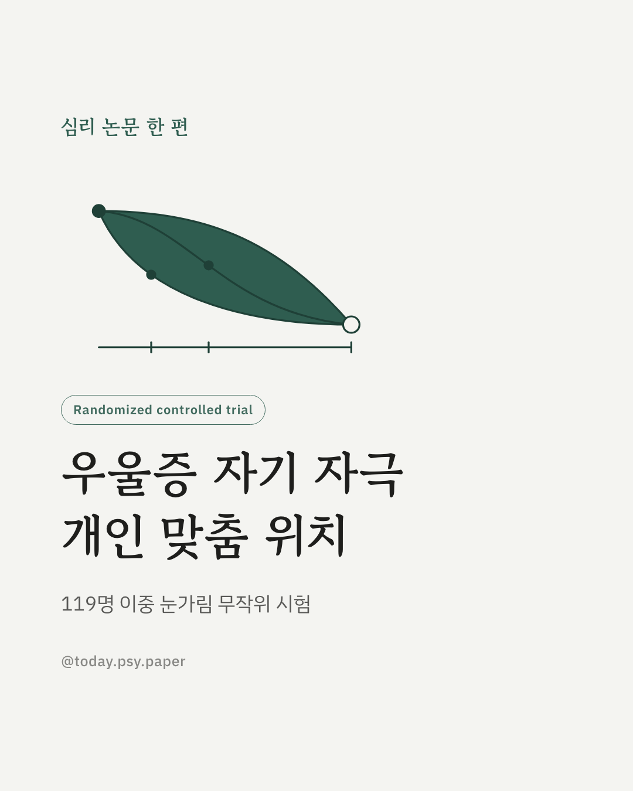
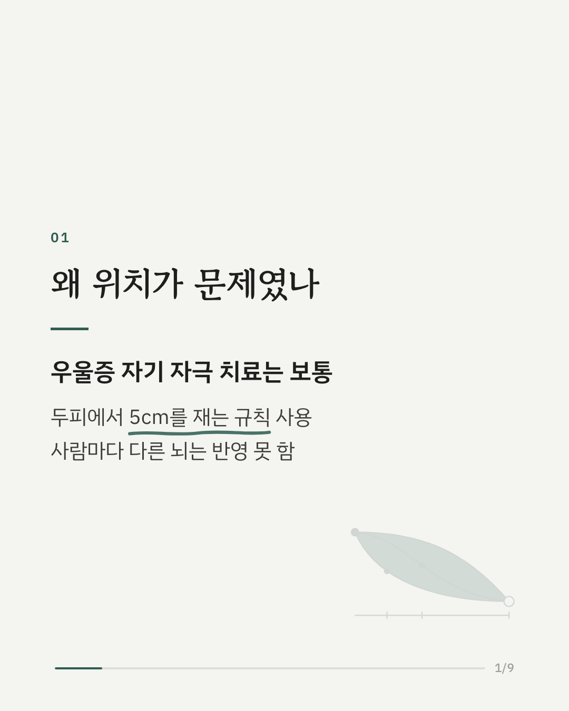
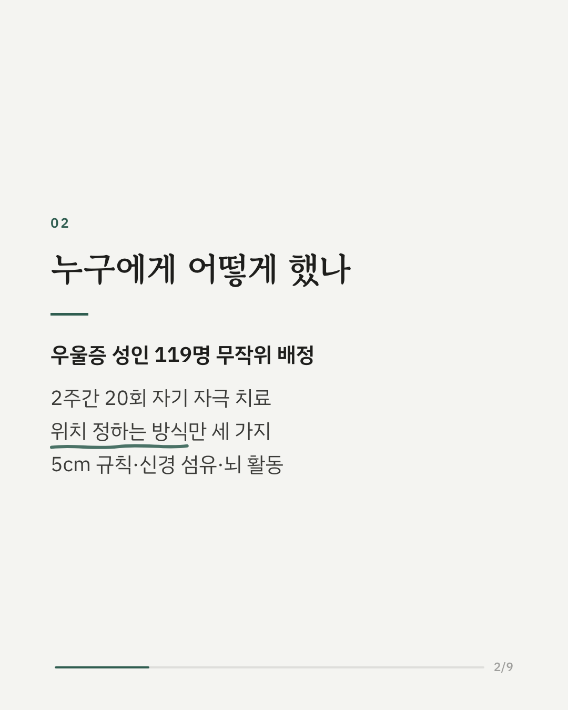
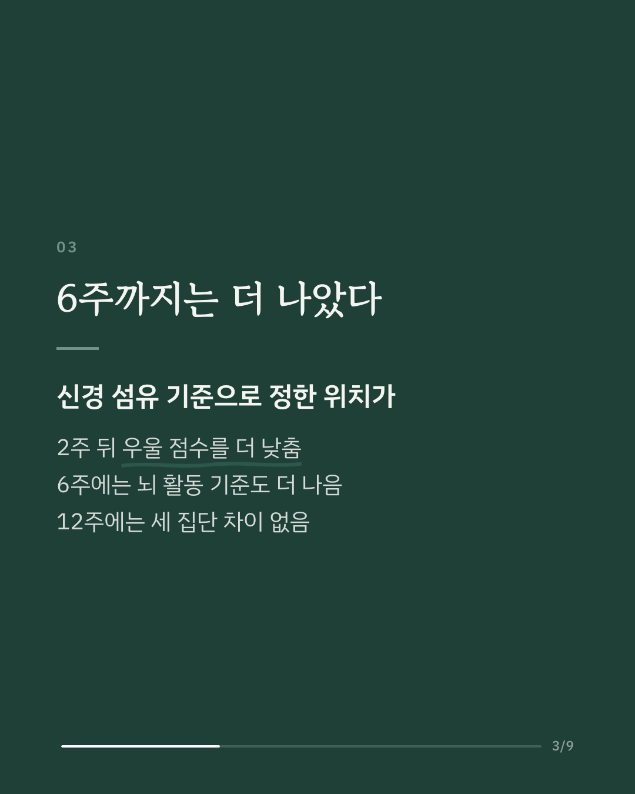
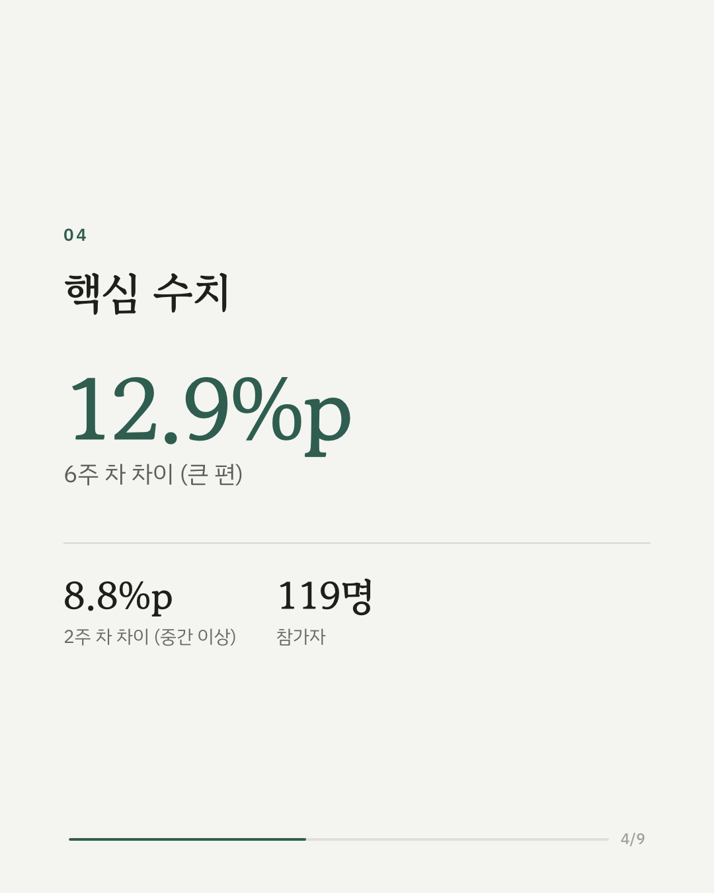
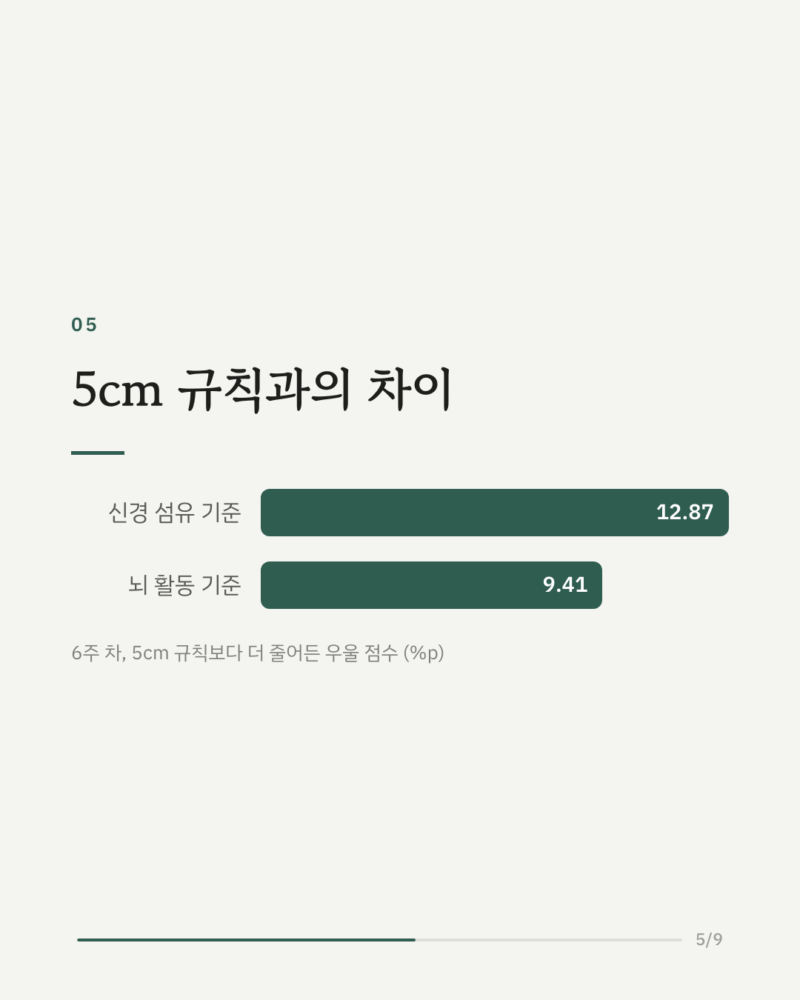
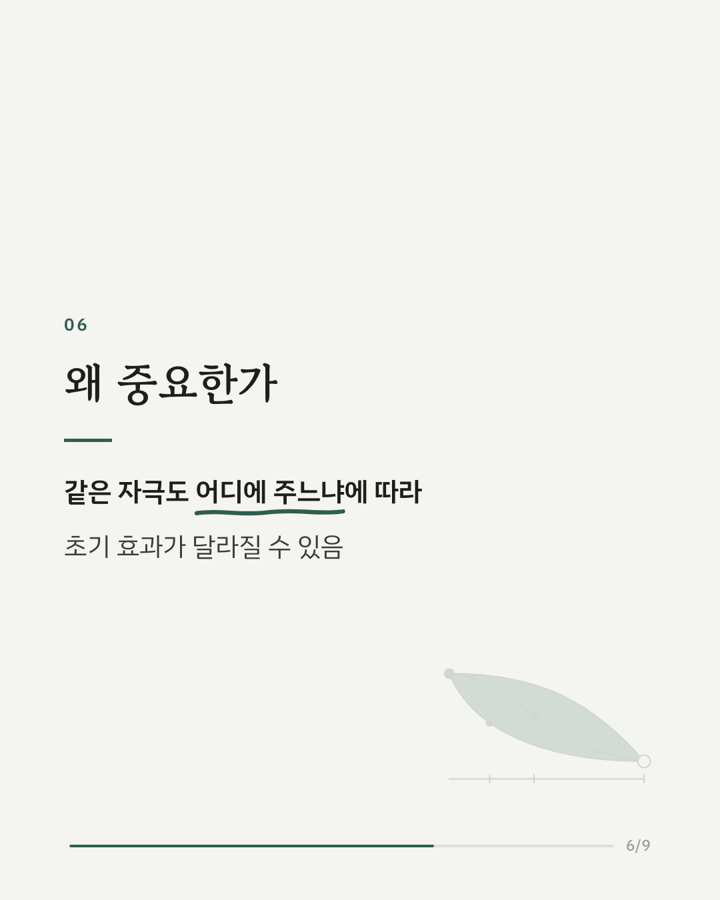
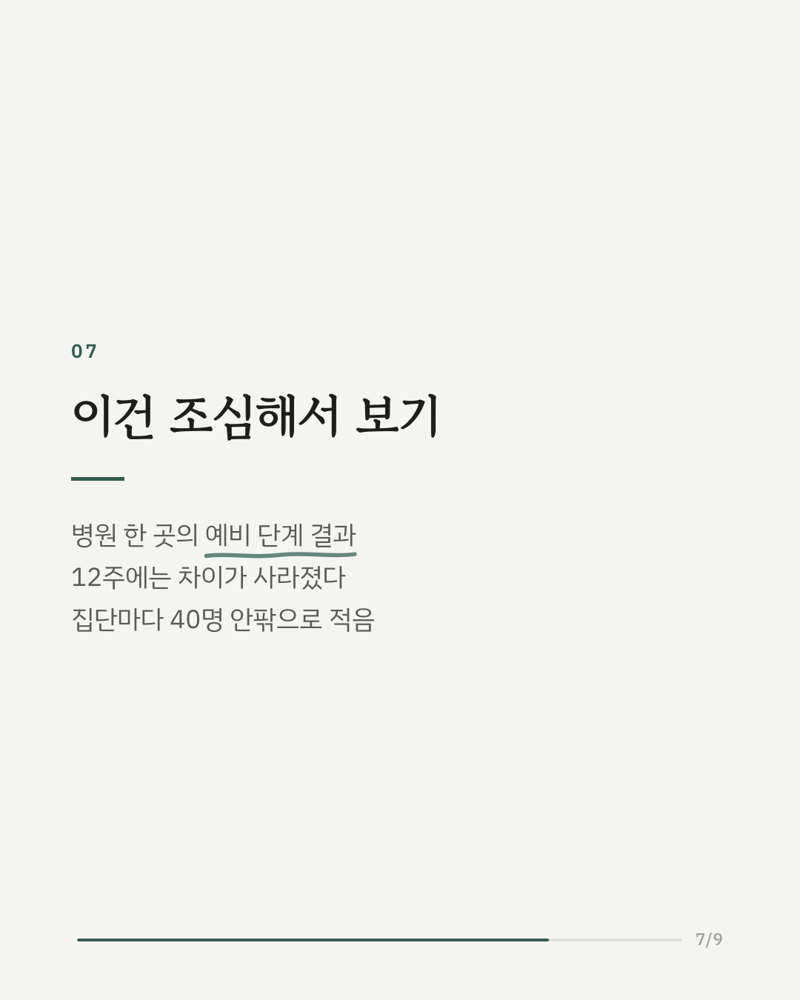
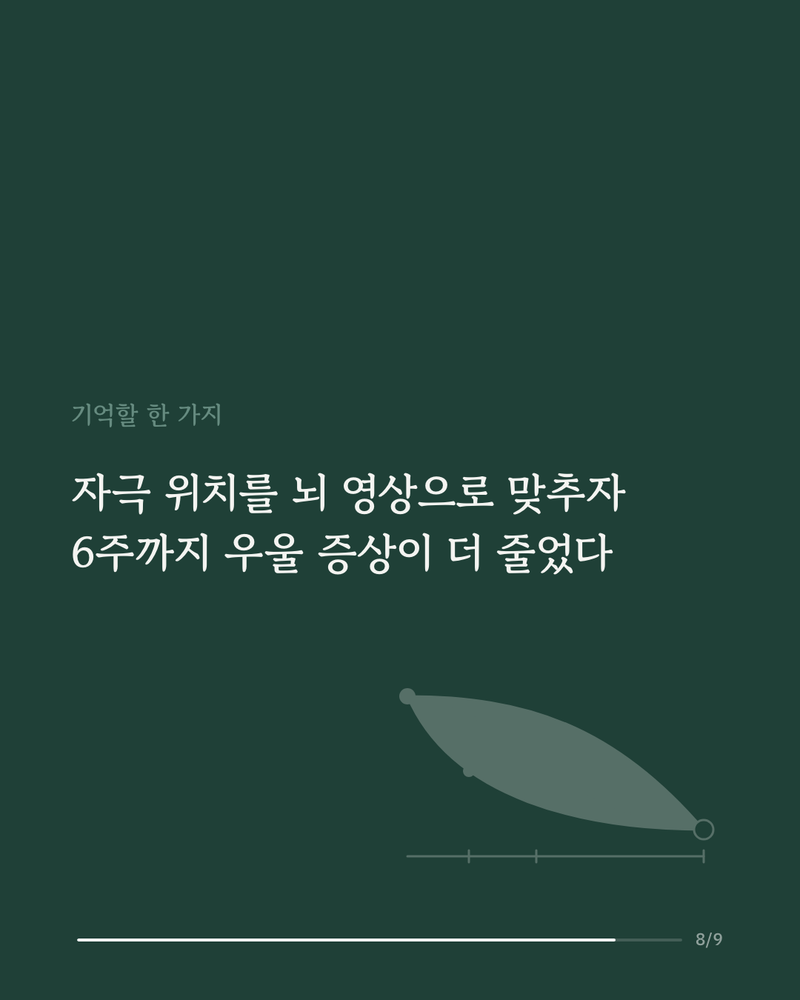
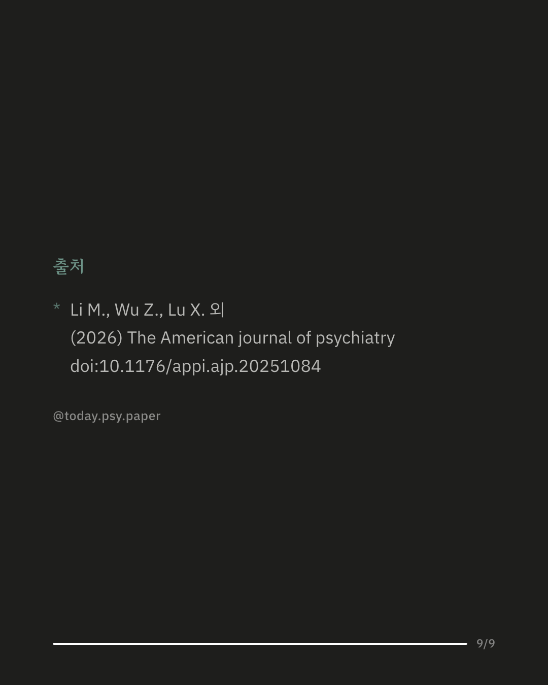

우울증 치료에 쓰이는 자기 자극 치료(TMS)는 머리 바깥에서 자기장으로 뇌의 특정 부위를 자극하는 방법입니다. 자극할 위치는 보통 두피에서 5cm를 재는 규칙으로 정하는데, 이 방식은 사람마다 다른 뇌 구조를 반영하지 못합니다. 이 연구는 항우울제가 한 번 이상 효과가 없었던 주요 우울 장애·양극성 II형 우울 성인 119명을 세 집단으로 무작위 배정했습니다. 모두 2주 동안 20회의 자기 자극 치료를 받았고, 위치를 정하는 방식만 달랐습니다. 한 집단은 5cm 규칙, 다른 두 집단은 개인의 뇌 영상에서 감정 조절에 관여하는 깊은 부위와의 신경 섬유 연결 또는 뇌 활동 연결을 기준으로 삼았습니다. 2주 뒤 신경 섬유 기준 집단은 5cm 규칙 집단보다 우울 점수가 8.8%p 더 줄었습니다(효과크기 중간 이상). 6주에는 신경 섬유 기준이 12.9%p(큰 편), 뇌 활동 기준이 9.4%p(중간 이상) 더 줄었습니다. 다만 12주에는 세 집단의 차이가 유의하지 않았습니다. 부작용은 집단 간 비슷했고 발작이나 조증은 없었습니다. 병원 한 곳에서 집단당 40명 안팎으로 진행한 시험이고, 연구진도 예비적 근거라고 밝혔습니다. 차이가 12주까지 이어지지 않은 점도 함께 봐야 합니다. 출처: The American Journal of Psychiatry (2026), 'Individualized Connectivity-Guided Versus Conventional Targeting of Accelerated Theta-Burst Stimulation in Depression: A Randomized, Double-Blind, Parallel-Design Trial' DOI: 10.1176/appi.ajp.20251084 #우울증치료 #경두개자기자극 #치료저항성우울증 #임상심리 #정신건강정보 #심리학연구 #논문리뷰
python3 publish.py 42581396